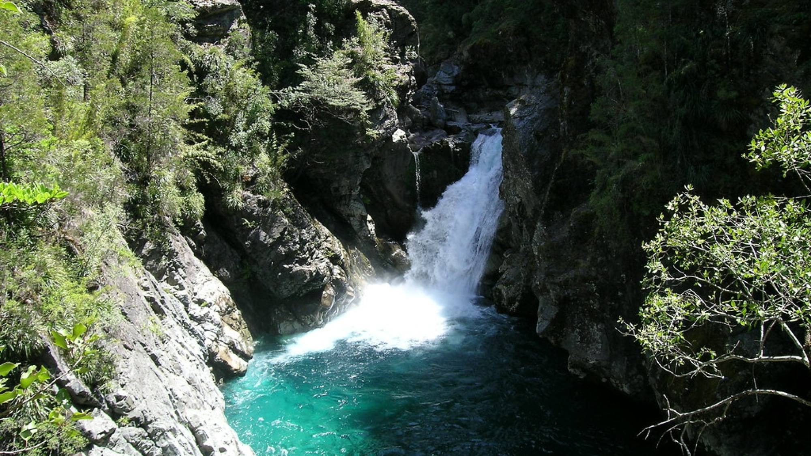
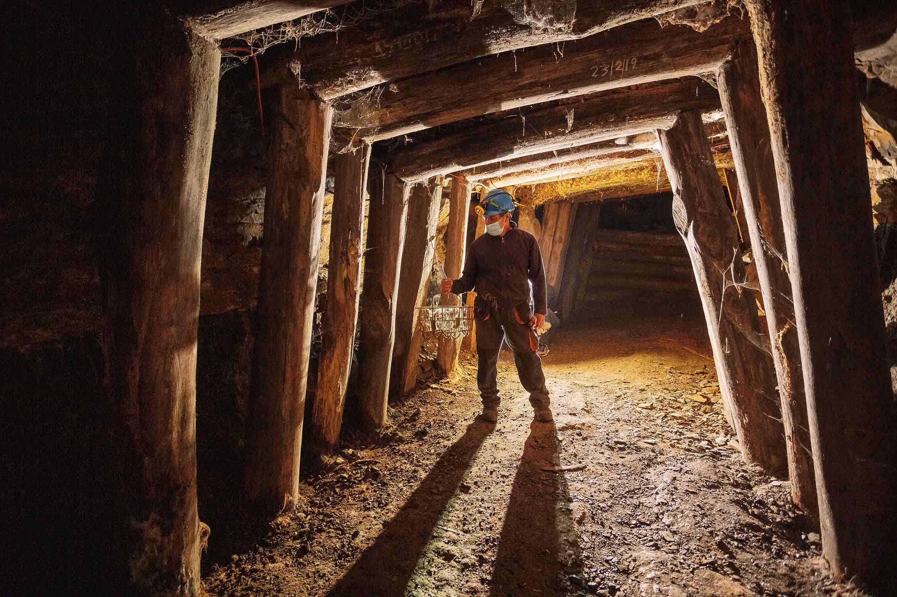
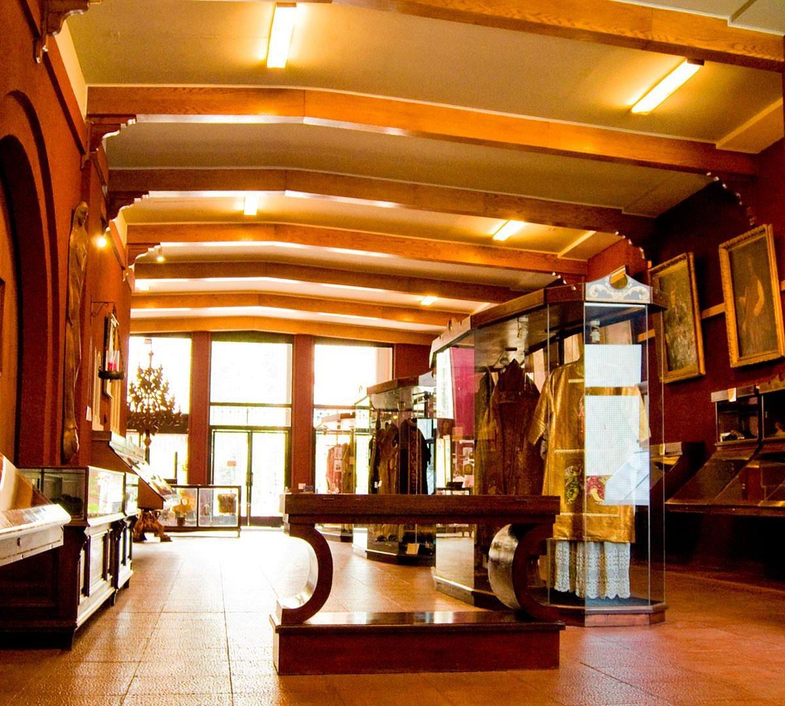
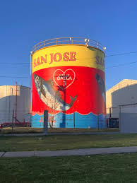
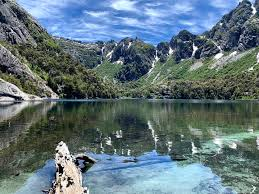
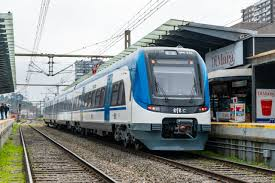
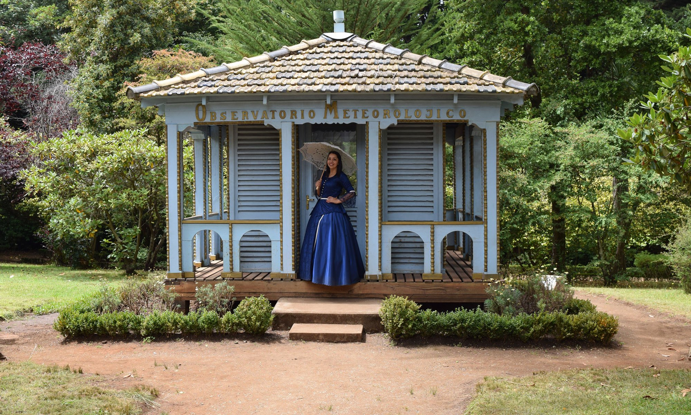
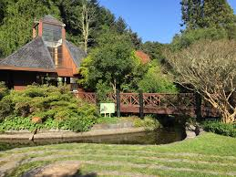

Encuentra cosas que hacer para todo lo que te gusta
Explora más de 40 experiencias y reserva con nosotros

Buscar todo
Hoteles
Cosas que hacer
Restaurantes

Explora más de 40 experiencias y reserva con nosotros

Al Aire Libre

Comida

Cultura

Agua

Tres días no parece mucho, pero en Alto BioBío (una pequeña comuna fácil de caminar con atracciones agrupadas en el centro de la ciudad) es tiempo suficiente. En un fin de semana largo,...





El transporte público en Concepción combina trenes, buses urbanos (micros) y colectivos que conectan eficientemente el centro con comunas cercanas, ofreciendo una opción económica y frecuente para moverse por la ciudad...

Parque Isidora Cousiño
Arco UdeC

Parque Jorge Alessandri